Heather had finally decided it was time—Neet and Buddy were due for a haircut. With summer creeping in, their fur had grown longer than ever, and the heat was making them miserable. So, with a determined grin, Heather announced, “Boys, it’s time for a makeover!”
Neet rose on his command post, a worn-out cushion on the couch. A makeover sounded like something that happened to a dog other dogs admired. He pictured a leisurely walk past the banyan tree, everyone looking up just as he arrived.
Buddy backed toward the other end of the couch.
“I’m already made,” he said.
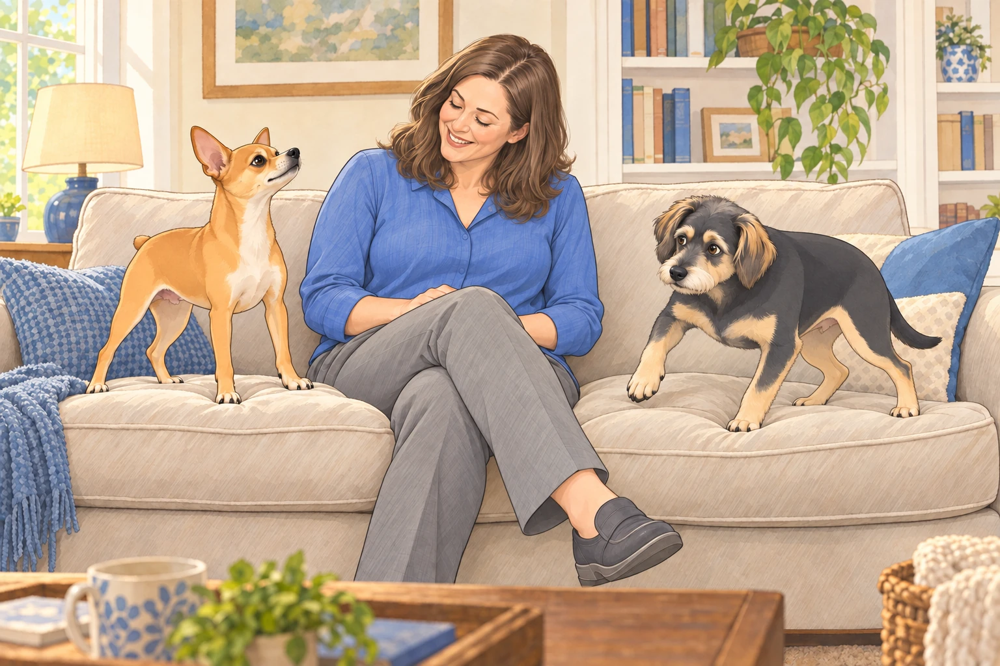
Heather laid their leads across her knee. Neet put his head forward before she had opened his collar. Buddy examined a cushion seam with sudden concentration.
She waited. Then she patted the space beside her.
“Come on, darling. We’ll do it together.”
Buddy came. He wanted to be comfortable in the heat. He also wanted whatever happened at a pet salon to have happened already.
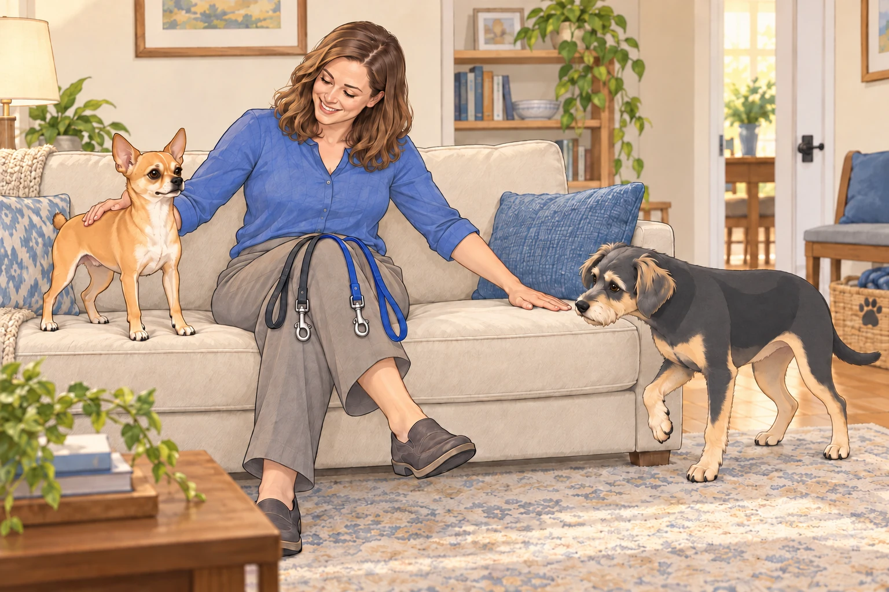
“I’ll let you go first,” he told Neet.
“How generous.”
“I was hoping you’d think that.”
Before either could revise the arrangement, Heather had them leashed up and marching toward the neighborhood’s finest pet salon: The Dapper Dog Den.
The Chaos Begins
Lavender shampoo met them at the door. Behind it came wet dog, warm towels, and a very faint suggestion of treats. There were dogs everywhere, getting primped and polished.
Neet took three proud steps into the salon. Buddy took two, which left him touching Heather’s leg.
A well-groomed poodle eyed them curiously. “First time?” she asked, fluffing her perfect fur.
“This is my first official makeover,” Neet said grandly. “But I was born fabulous.”
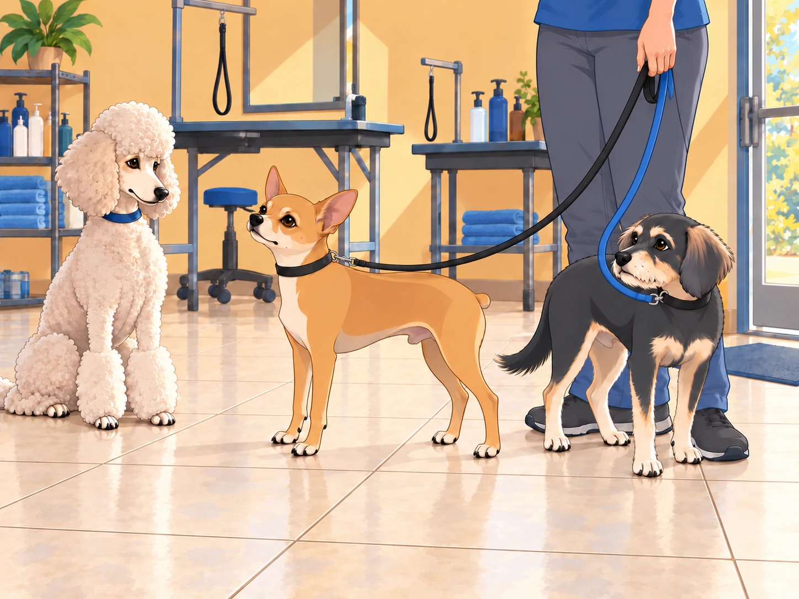
The poodle considered him.
“And modest.”
Buddy checked the door. He wanted the haircut over with, preferably before anyone started discussing his own fabulousness.
“Can you make me look finished?” he asked.
Neet turned his good side toward the poodle. Then, unwilling to waste the other one, turned again.
Heather greeted Raj, the cheerful groomer, while he closed the entrance door behind them. She unclipped the walking leads and folded them into her bag.
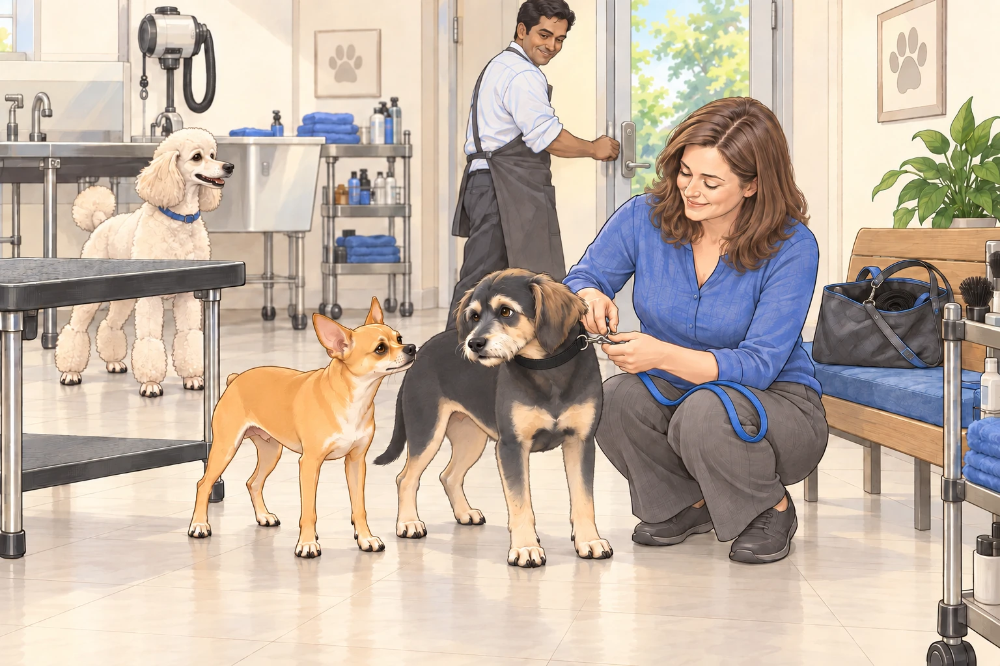
Buddy found a place beside a bench. From there he could see the door, Heather, and the grooming table without looking directly at any equipment.
An electric hum began at the far end of the room.
He moved behind the bench.
The hum stopped.
Buddy emerged, cautiously pleased with his solution.
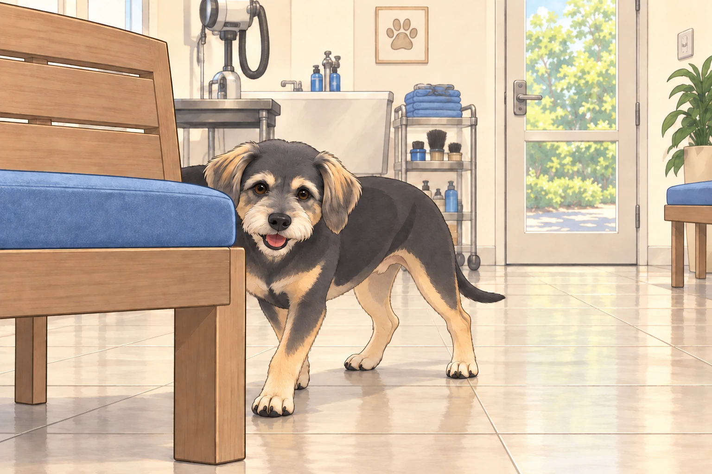
Raj came over with a clean towel. “Who’s first?”
Neet immediately stepped forward. Buddy gave him a helpful nudge.
“Your public is waiting.”
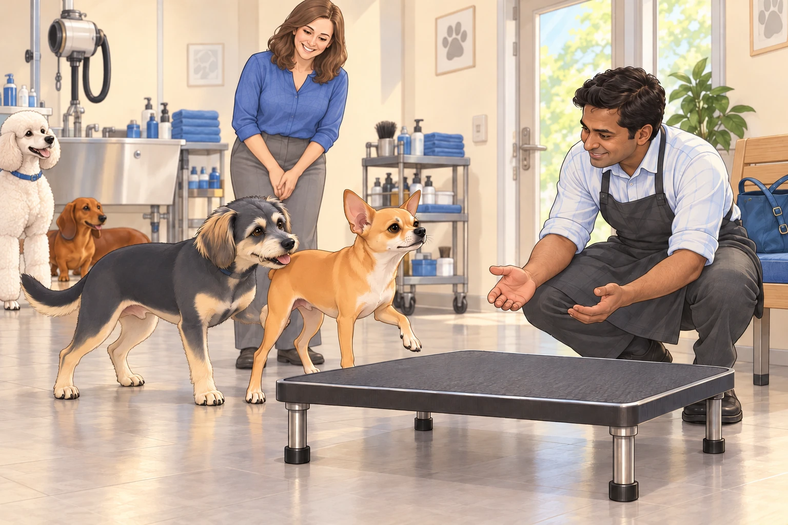
Neet sprang toward the low grooming table, and Raj steadied him as he landed.
“Let’s do this!”
Buddy settled beside Heather. He had successfully arranged to learn everything from the floor.
Neet’s Supreme Confidence… Gone Wrong
First came the shampoo. Neet loved it.
“Yes, yes, work the lather!” he sighed, tipping his chin up while Raj washed beneath it.
Heather folded her arms. “So this is the same dog who won’t put one paw in a puddle.”
“That water has no staff,” Neet told Buddy.
Buddy watched warm water run into the basin. His ears rose a little. There might be something to be said for a bath that came to you.
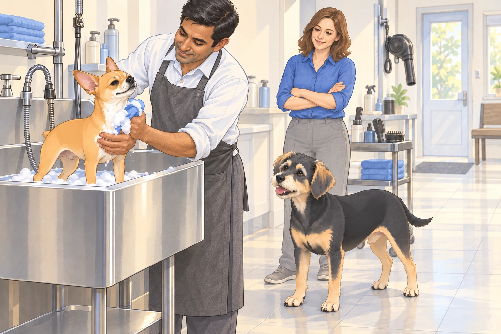
Raj rinsed and towelled Neet, who stood with the grave patience of someone having a portrait painted. When Raj reached for another towel, Neet tried a sideways pose.
“Less posing, please,” Heather said.
Neet corrected his position by posing straight ahead.
Then came the trim.
Bzzzzzzzzzzzz!
Neet’s ears shot up. His eyes widened.
“WHAT IN THE NAME OF TREATS IS THAT?”
Raj stopped the clippers as Neet twisted. But Neet had already leaped down, bolting mid-trim with damp fur and a surviving patch of suds beneath one ear.
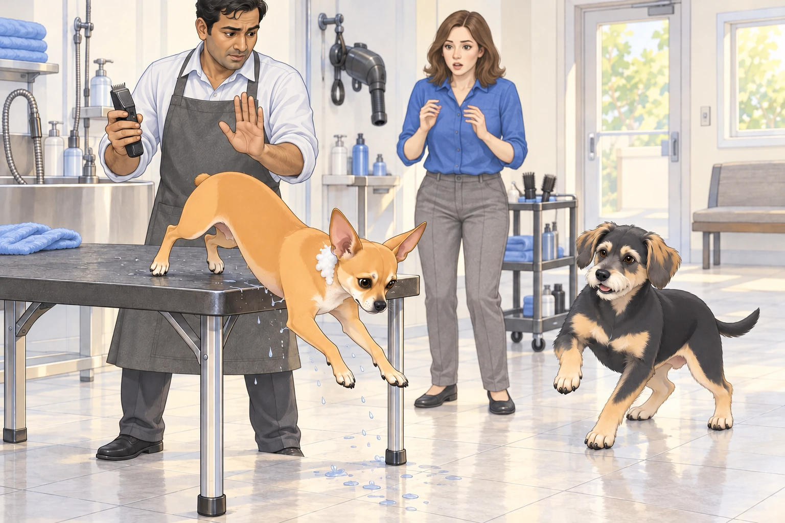
Buddy rose. Learning everything from the floor had suddenly become much less convenient.
Neet clipped a bottle of conditioner with his shoulder. It tipped, spilling across the tile. He skidded through it and barely dodged a blow dryer beside the next station.
The dryer swung on its hook.
“IT’S FOLLOWING ME!”
“It’s staying there,” Buddy said.
Neet chose not to trust this distinction.
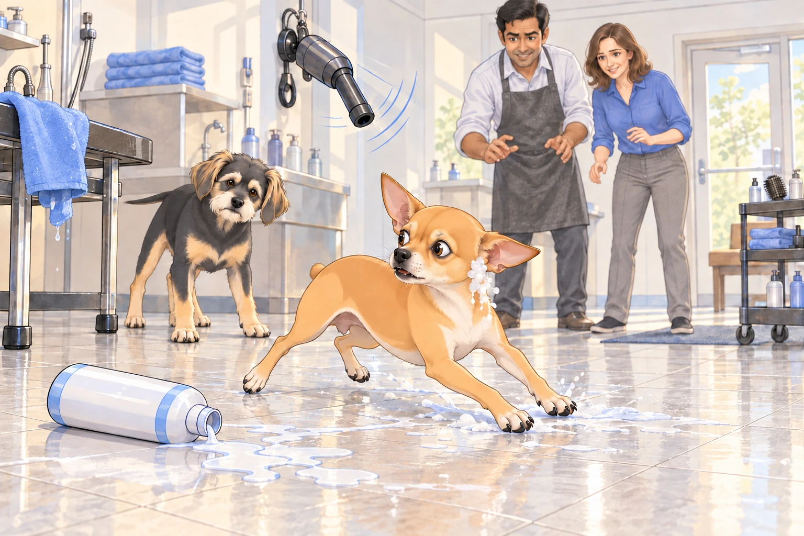
Heather moved between him and the spill. “Neet, stop!”
Raj held out a towel. Neet ducked beneath it, and Heather ducked as the towel sailed past her shoulder.
“NEVER!” Neet barked.
Buddy caught a corner of the fallen towel. If he cleared it out of the way, everyone could finish sooner. He dragged it toward his bench.
The towel snagged a small brush trolley. Buddy pulled harder.
A hairbrush rattled off the edge.
Neet dodged it with a yelp of outraged vindication.
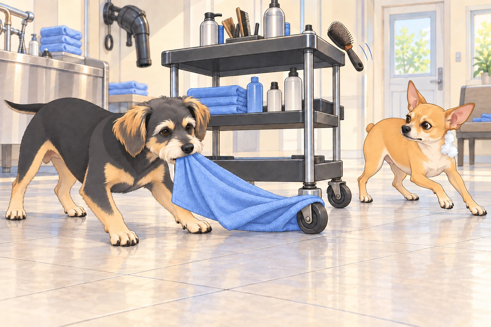
Buddy released the towel.
“Not helping,” he admitted.
The poodle lifted one freshly finished paw out of Neet’s path and held it there. An unsuspecting dachshund glanced up just as Neet leaped over him.
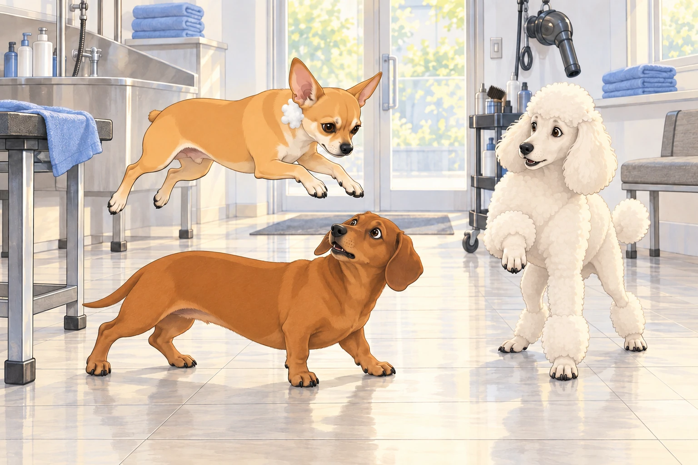
“Was that included?” the dachshund asked.
Neet dived under a grooming station.
The salon became quiet except for a bottle slowly rolling to a stop.
Buddy looked at the towel. At Heather’s bag. At the entrance.
Heather might decide this was enough for today. That would mean going home unwashed. Which sounded excellent until he remembered that “today” left other days available.
He moved to the exit and planted himself across it.
The Only Way Out
From under the grooming station, Neet glared at the silent clippers in Raj’s hand.
“Move,” he whispered to Buddy.
Buddy glanced at the table. “If I let you out, we have to come back.”
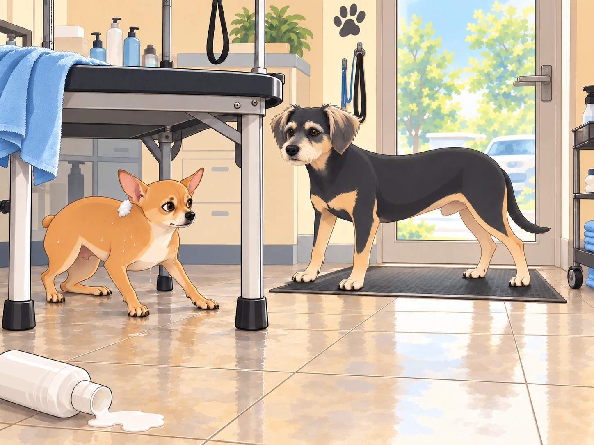
Neet looked at the door. Then at Raj.
He had not considered a second appointment.
Raj set the clippers down and wiped the spill while Heather knelt beside the station. She did not reach underneath after Neet. She held out a dry corner of a clean towel Raj passed her.
“You’ve got shampoo on your ear, you numbskull.”
Neet could not inspect that ear without moving the rest of himself. He came out far enough to let her wipe it.
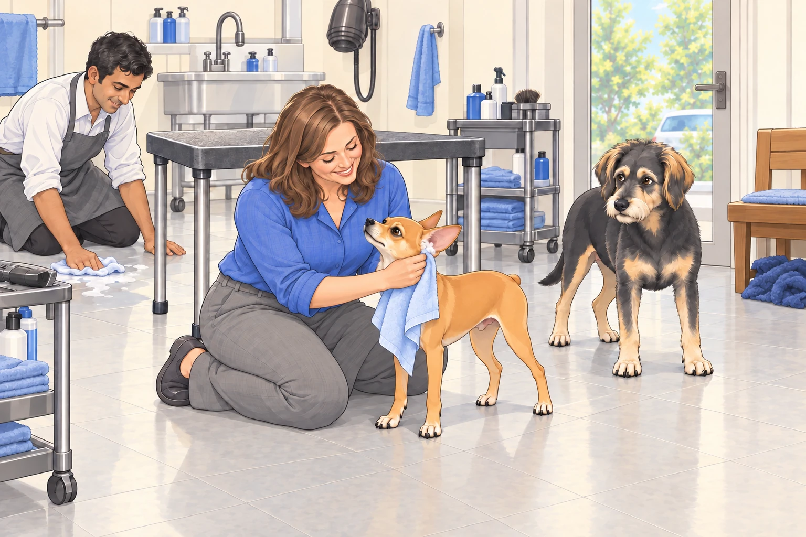
Buddy kept his post.
“Are you guarding me or the door?” Neet asked.
“The next appointment.”
Raj picked up the clippers, showed them to Heather, and switched them on well away from Neet. The buzzing remained where Raj was.
Neet took one step backward.
It did not pursue him.
Heather scratched his chest. “There. We can take our time.”
Buddy looked stricken.
“Within reason,” he added.
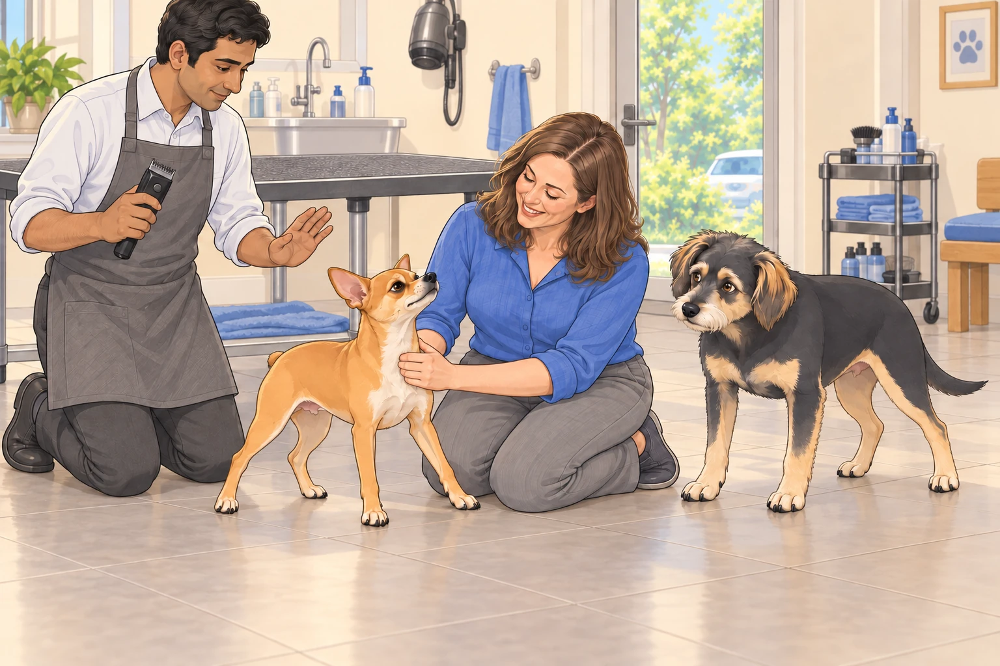
Neet huffed, giving Raj his best you win this round glare. He allowed Heather to lift him back onto the table. Raj worked in short stretches, pausing when Neet stiffened.
Buddy stayed in view beside Heather. Neet watched him instead of the clippers.
“You could look more encouraging.”
Buddy tried.
“Less like that.”
Buddy went back to his ordinary face.
At last Raj put the clippers down. Neet had an accidentally stylish asymmetrical cut and a strong preference for admiring it after leaving the building.
He inspected his reflection briefly.
“Deliberate.”
Heather wiped a drop from his nose. “Of course.”
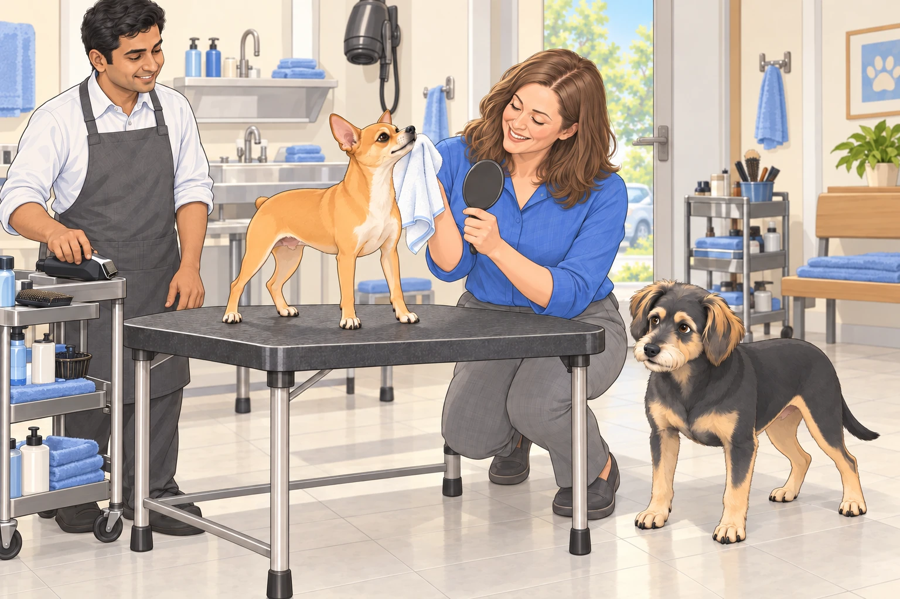
Buddy’s Turn: The Unexpected Betrayal
Raj gently lifted Buddy onto the table.
Buddy held his paws close together. Now that he had saved them from another appointment, he rather wished he had saved himself from this one.
“It’s okay, Buddy,” Heather reassured him.
Neet settled at her feet, dry and observant.
The warm water reached Buddy’s shoulders. He stopped looking at the door. Raj worked the shampoo through his beard, and Buddy leaned forward into the washing.
“Huh,” he thought. “This isn’t so bad.”
He leaned a little farther.
Raj caught his chin with the towel before it reached the basin.
“Somebody’s enjoying himself.”
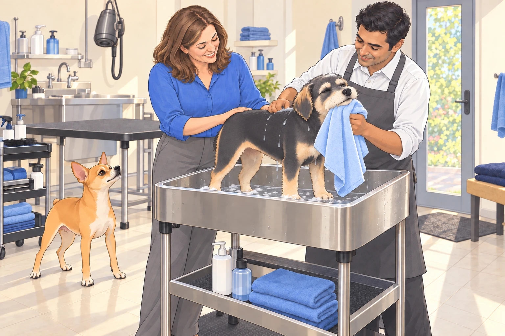
Buddy straightened with dignity. There was no reason to tell the poodle.
Then came the clippers.
The instant the buzzing started, Buddy went full statue-mode. He stood with his eyes wide and every paw exactly where Raj had placed it.
Raj paused. “Still with us, Buddy?”
Heather stroked his shoulder, and Buddy let out the breath he had been holding.
Raj smiled. “Well, this is a first.”
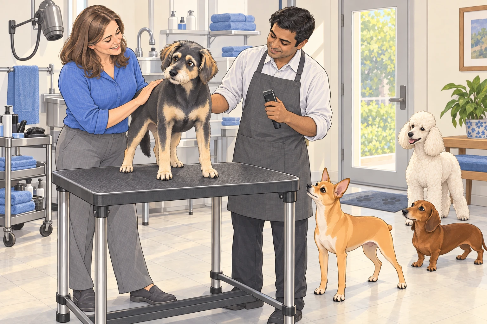
Heather retrieved the towel Buddy had dragged beneath the bench. “I like this technique.”
“Hey Buddy,” Neet said. “You okay there, pal? You look like you saw a ghost.”
Buddy whimpered.
“Blink if you need help.”
Buddy blinked.
Neet glanced toward the clippers. “Moral help.”
Buddy shut his eyes briefly. He had personally blocked the only exit for this dog.
Raj waited until Buddy looked toward Heather again, then resumed. Buddy discovered he could move his eyes without moving his feet. He kept Heather in sight. When Raj shifted to the other side, Buddy turned his head with him.
The buzzing still did not follow him anywhere Raj wasn’t going.
“Nearly there,” Heather said.
Buddy believed her. He had heard her say “come on” on the couch, and she had stayed beside him all the way.
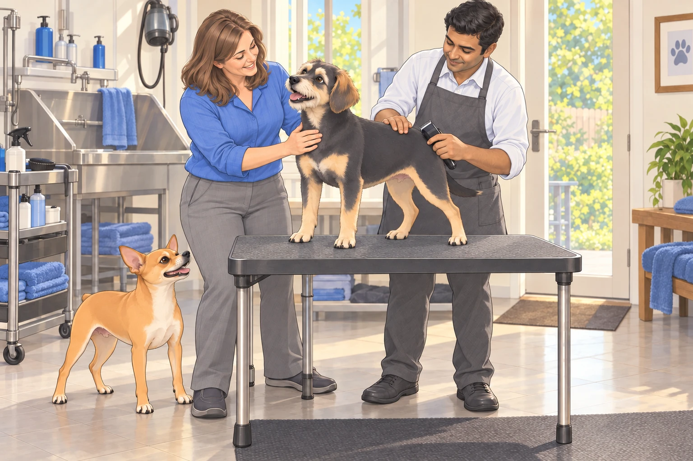
Neet eyed the strip of hair Raj had left along Buddy’s head.
“A mohawk,” he said. “Keep that.”
Raj held up the mirror to Heather. “What do you think?”
She hesitated, then laughed. “It rather suits him.”
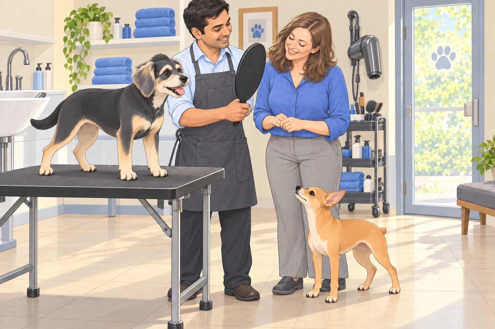
Buddy stayed still while Raj finished the sides. He had endured the clippers; he wanted to see what he had earned.
When Raj finally brought the mirror around, Buddy blinked.
He leaned toward it. The other dog leaned toward him.
Buddy lifted his chin.
“I look tough.”
His tail began to wag.
“Don’t change that bit,” he told Neet. “The top.”
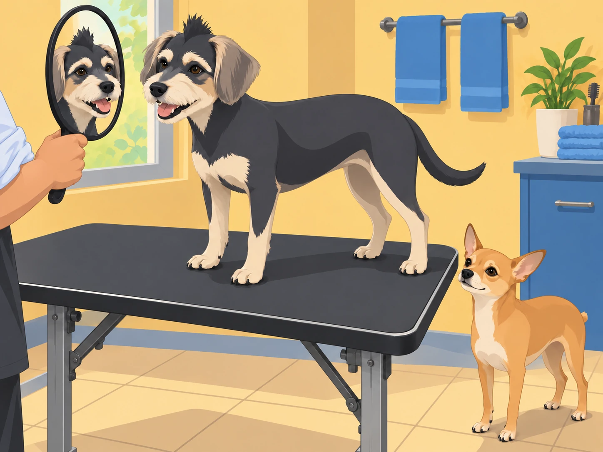
Neet examined him from both sides. “You do look tough.” He glanced at his own uneven trim in the mirror. “Mine is more subtle.”
Raj lowered the mirror to set it aside. Buddy followed it with his nose.
“Just one more look,” Heather said, taking it from Raj.
Buddy held his chin a little higher.
The poodle studied him, then gave a small approving nod.
“Finished,” she said.
Buddy was no longer quite certain he wanted to be.
The Grand Reveal
Heather clipped on their walking leads before opening the door. Outside, the air moved pleasantly around them.
Neet strutted like a runway model. Buddy, rocking his unexpected mohawk, walked with newfound confidence. He tried Neet’s slow pace, decided it was unnecessarily slow, and trotted ahead.
Heather shortened neither lead. She simply stopped until both dogs remembered they were walking with her.
They looked back together.
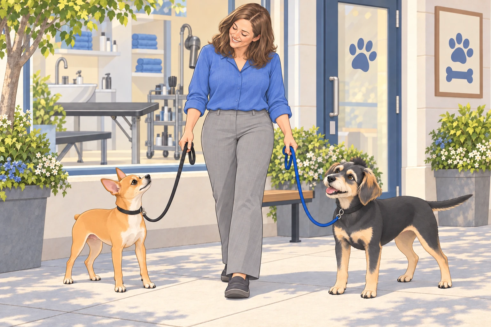
“There you are,” she said, smiling, and they set off side by side.
As they paraded through the neighborhood on their way home, a group of dogs from Neet’s gang barked in approval.
Shadow whistled. “Lookin’ sharp, boss.”
Neet grinned. “Always.”
Shadow came closer to inspect Buddy.
“Who chose that?”
Buddy glanced at Neet, then toward Heather, who was rubbing the spot behind his ear exactly as she always did.
“I kept it,” he said.
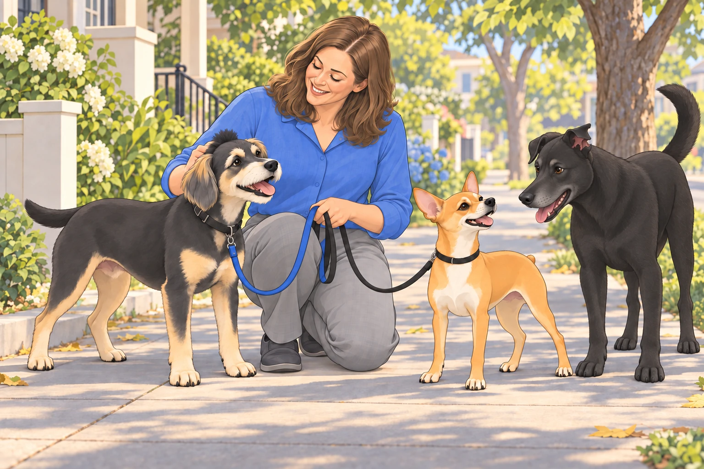
He let Shadow see both sides. Being a little wild, he discovered, did not stop him from being himself.
Heather shook her head affectionately. “Well, at least no one can say you two aren’t memorable.”
Buddy slowed beside a shop window for one more look.
Neet waited. For once, he was the one ready to go home.
“Finished?” he asked.
Buddy turned his good side toward the glass. Then tried the other one.
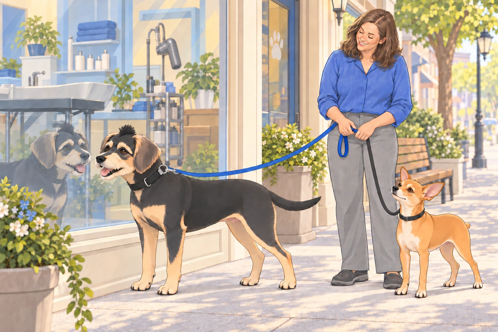